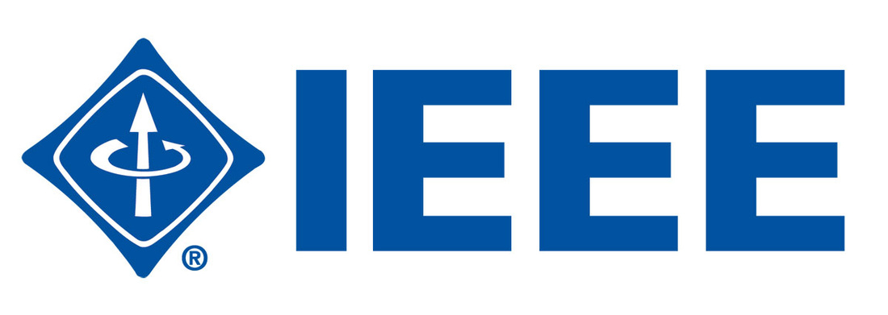

Extracurricular Activities
-
Undergraduate Research – RUMarino
Software Development Division
February 2018 – Present -

 Familiarized with the Python code written by the team members in less than two weeks to be able to develop the
code and understand the basic structure Familiarized with the Python code written by the team members in less than two weeks to be able to develop the
code and understand the basic structure
|
Designed and developed the autonomous architecture logic of the path mission in collaboration of 3 teams using Python for the 2018 RoboSub competition in San Diego, California | • Maintained communication with the Vision team, Embedded Software team and other necessary divisions to properly achieve the task assigned. |
- 
-
IEEE Computer Society – Member
Captain of Web-Design Project
January 2016 – Present
| • Managed team of 4 students for the current creation and integration of resume data base of members and non-members of the IEEE Chapter of the University of Puerto Rico, Mayaguez Campus (UPRM) | • Researched for a more secure, stable and fast web-design architecture to develop an IEEE-Computer Society webpage |